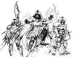
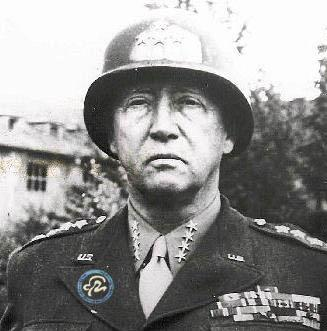

Forums galactiques > Assemblée Galactique : diplomatie officielle > Ouverture des votes
| las casas Respect diplomatique : 125  26/03 ETU 22:53 | Score : 3 Détails Bien le bonjour noble assemblée. Cela fait maintenant 4 jours que la dépose des candidature a été ouvert, et je la déclare close en cet instant même ou je parle. Ainsi, je déclare ouvert l'election des diplomates, considérée comme un devoir pour chacun des habitants d'esperance car ce sont eux qui vous représenteront le moment venu. Pesez donc longuement vos vote, mais poin trop non plus car l'election sera fermée dans deux jours heure pour heure. Celle ci se déroulera dans les conditions suivantes:
Chaque commandant possède deux voies, qui lui sont propres et donc utilisées par eux seuls. Ils devront les donner aux comandants de leur choix de cette manière: "Moi...donne ma première voie au cdt.., ainsi que ma seconde voie au cdt..., car j'aspire à leurs donner les moyens de servir esperance." Il est possible de ne voter que pour un seul commandant. Dans ce cas, il vous faudra le présenter de cette manière: "Moi ... donne ma premire voie au cdt... car j'aspire à lui donner les moyens de servir esperance, mon second vote sera considéré comme blanc" Enfin, voici la liste des candidats: Heracles Dr Machiavel Chacomat Vladimir Harkonnen Impératrice Jade Cesco Imperator Vous l'aurez remarqué, les votes sont transparent, connu de tous: Pour la simple et bonne raison qu'il est de votre devoir que de porter bien hautes vos idées diplomatique, aspect de la démocratie qui ne requiert selon nous aucune sorte d'intimité. Parlez donc dictinctement et avec fierté commandants d'esperance, pour afficher vos concept diplomatiques, dans le but de mener esperance vers l'harmonie. Las Casas de Bartolomé HRPCe topic est réservé aux vote.HRP | ||
| daetha Respect diplomatique : 526  26/03 ETU 22:58 | Score : 5 Détails "Moi Daetha donne ma première voie à la commandante Impératrice Jade, ainsi que ma seconde voie au commandant Vladimir Harkonnen, car j'aspire à leurs donner les moyens de servir esperance."
| ||
| Amiral Tarkan Respect diplomatique : 319  26/03 ETU 23:07 | Score : 5 Détails "Moi Amiral Tarkan donne ma première voie au commandant Vladimir Harkonnen, ainsi que ma seconde voie au commandant Machiavel , car j'aspire à leurs donner les moyens de servir esperance."
| ||
| L'ancien de la paix Respect diplomatique : 29  26/03 ETU 23:12 | Score : 3 Détails "Moi l'ancien de la paix donne ma première voie au commandant a l'impératrise jade, ainsi que ma seconde voie au commandant Machiavel , car j'aspire à leurs donner les moyens de servir esperance."
| ||
| Wolverine Respect diplomatique : 2271  26/03 ETU 23:22 | Score : 2 Détails Moi, Wolverine, Protecteur des Mutants de Gensoha donne ma première voie au Commandant Harkonnen, ainsi que ma seconde voie au Commandant Cesco Imperator, car j'aspire à leur donner les moyens de servir Esperance.
| ||
| Salibe Respect diplomatique : 367  26/03 ETU 23:22 | Score : 3 Détails Moi Salibe donne ma premire voie au cdt Vladimir Harkonnen car j'aspire à lui donner les moyens de servir esperance, mon second vote sera considéré comme blanc.
| ||
| Galen Respect diplomatique : 214  26/03 ETU 23:33  | Score : 2 Détails "Moi Galen donne ma première voie au commandant Vladimir Harkonnen, ainsi que ma seconde voie à la commandante Impératrice Jade, car j'aspire à leurs donner les moyens de servir esperance."
| ||
| Kyle Emagan Respect diplomatique : 1309  26/03 ETU 23:34 | Score : 2 Détails "Moi, Kyle Emagan, donne ma première voie au Commandant Cesco Imperator, ainsi que ma seconde voie au Commandant Harkonnen, car j'aspire à leur donner les moyens de servir Esperance."
| ||
| imperatrice Jade Respect diplomatique : 469  26/03 ETU 23:42 | Score : 3 Détails Moi Impératice Jade donne ma premiere voix a Vladimir Harkonnen et ma seconde voix a Impératice Jade est m'engage a soutenir éspérance.
| ||
| el murte Respect diplomatique : 8  26/03 ETU 23:45 | Score : 3 Détails Moi,commandant El Murte done ma premiere voie a Impératrice Jade et ma seconde voie a Vladimir Harkonnen,et m'engage a donner les moyens de servir esperance.
| ||
| khalim Respect diplomatique : 488  26/03 ETU 23:57 | Score : 2 Détails Moi, Khalim Khli, donne ma premire voie au cdt Vladimir Harkonnen, car j'aspire à lui donner les moyens de servir esperance, mon second vote sera considéré comme blanc.
| ||
| Sether Respect diplomatique : 116  27/03 ETU 00:46 | Score : 1 Détails Moi, Capitaine Sether, donne ma voix au Baron Harkonnen.
| ||
| Erold Savostos. Respect diplomatique : 138  27/03 ETU 01:35 | Score : 3 Détails
"Moi ,Erold Savostos, donne ma première voie au commandant Vladimir Harkonnen car j'aspire à lui donner les moyens de servir Espérance, mon second vote sera considéré comme blanc" | ||
| Nute Gunray Respect diplomatique : 32  27/03 ETU 01:41 | Score : 3 Détails
"Moi, Nute Gunray, donne ma première voie au commandant Vladimir Harkonnen car j'aspire à lui donner les moyens de servir Espérance, mon second vote sera considéré comme blanc" | ||
| Kryllenne Respect diplomatique : 596  27/03 ETU 02:07 | Score : 2 Détails "Moi, Kryllenne, Dame Protectrice de Bel-o-khan donne ma première voix au Baron Harkonnen, ainsi que ma seconde voix au Commandant Cesco Imperator, car j'aspire à leur donner les moyens de servir Espérance."
| ||
| Parisii Respect diplomatique : 1721  27/03 ETU 02:16 | Score : 1 Détails
Moi Commandant Parisii, défenseur de l'espace nommé Cosmos Politan, farouche guérrier des terres de pierres, appelées aussi Un Roc Uptible donne ma première voix au cdt Vladimir Harkonnen, ainsi que ma seconde voix au cdt Cesco Imperator, car j'aspire à leurs donner les moyens de servir esperance. | ||
| Asurmena Respect diplomatique : 103  27/03 ETU 02:22 | Score : 2 Détails Moi Commandant Asurmena donne ma premiere voix au cdt Vladimir Harkonnen et ma seconde voix au cdt Cesco Imperator.
En esperant qu'ils sachent tout deux rester impartial. | ||
| Ciran Respect diplomatique : 213  27/03 ETU 05:27 | Score : 1 Détails Moi, Ciran, mandaté par le conseil Celdanien donne ma première voix au Baron Harkonnen, ainsi que ma seconde voix au Commandant Cesco Imperator, car j'aspire à leur donner les moyens de servir Espérance.
| ||
| Thanos Respect diplomatique : 227  27/03 ETU 08:23 | Score : 2 Détails "Moi Thanos, gildien et de la Fondation, donne ma première voie à la commandante Impératrice Jade, ainsi que ma seconde voie au commandant Vladimir Harkonnen, car j'aspire à leurs donner les moyens de servir esperance."
| ||
| baloo Respect diplomatique : 89  27/03 ETU 08:23 | Score : 2 Détails "Moi Baloo donne ma première voie au cdt Vladimmir Harkonnen, ainsi que ma seconde voie au Dr Machiavel, car j'aspire à leurs donner les moyens de servir esperance."
|
Forums galactiques > Assemblée Galactique : diplomatie officielle > Ouverture des votes